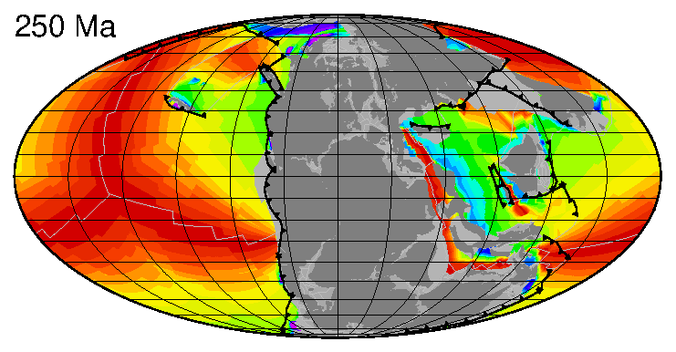

A plate tectonic reconstruction is a model of where every continent, microcontinent and plate boundary sat at any point in Earth's past. Building one that is internally consistent (where plates don't overlap or tear apart in ways the geology doesn't support) is a large data-integration problem, combining magnetic and gravity anomalies, geological mapping, paleomagnetic data and seafloor age constraints into a single connected model of plate motion.
These "full-plate" models, which describe the motion of every plate boundary rather than just a handful of major plates, are what let researchers in very different fields (paleobiology, paleoclimate, seismology, geodynamics) work in a shared spatial and temporal frame, sometimes hundreds of millions or even a billion years into the past.
GPlates & EarthByte
Much of this work happens through GPlates,
open-source desktop and Python software for building, visualising and querying plate reconstructions,
developed with the EarthByte Group
at the University of Sydney, where I was a Research Fellow for almost a decade. I contribute to GPlates and
the surrounding Python tooling (pygplates, and my own
GPlatesReconstructionModel
wrapper) that lets reconstructions be scripted and combined with other geospatial data rather than driven
only through a GUI. See also people I work with.
Seafloor age and lost ocean basins
One direct output of a full-plate reconstruction is a map of seafloor age: how old the oceanic crust is at every point on the seafloor, including in ocean basins that have since been entirely subducted and no longer exist. The animation below steps a seafloor age grid forward through time, built automatically from a topological plate reconstruction.

An automatically generated seafloor age grid stepping through geological time, from agegrid-0.1.